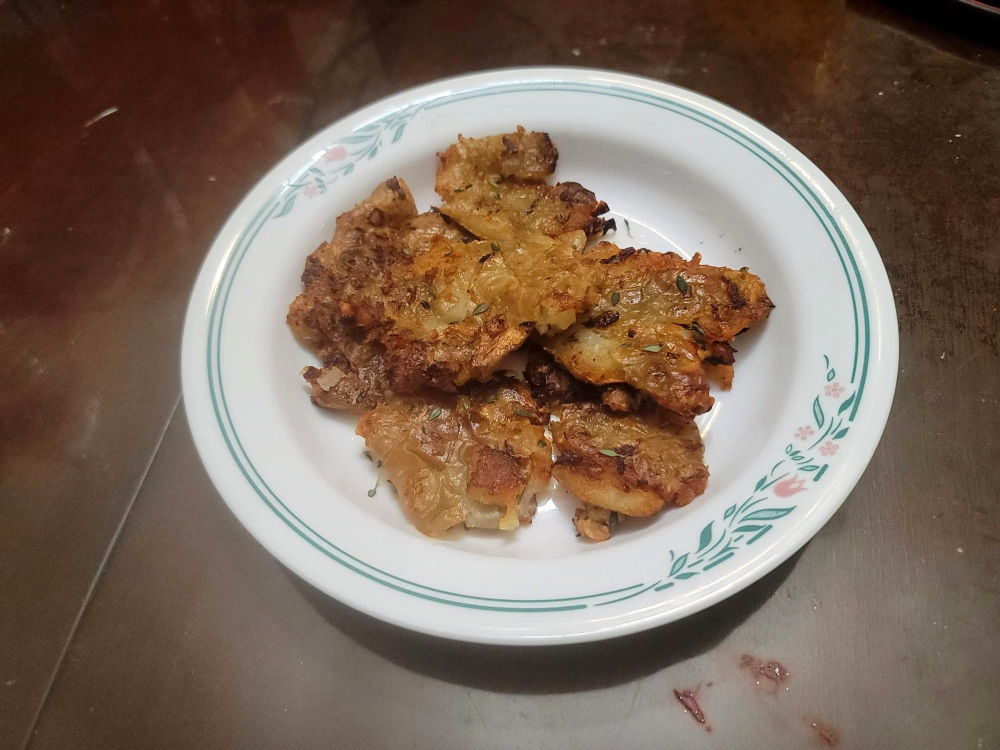

Smashed Sunchokes

Ingredients:
- 1 lb Sunchokes
- Salt, to taste
- 1 1/2 tbsp Canola oil
- 2 tbsp Butter
- 1/2 tsp Fresh thyme
Instructions:
- Add the sunchokes to a pot with enough cold water to cover. Season with salt and then bring to a boil. Reduce to a simmer and let cook for about 10 minutes or until fork tender.
- Strain the sunchokes from the water and let cool. Use a large pot or skillet to flatten the sunchokes one at a time. Do not place so much pressure that it separates and falls apart.
- Heat the oil in a pan over medium heat. Add the sunchokes in a single layer and cook without moving for about 3 minutes or until well browned. Then flip and add in the butter and thyme. Let cook for another 3 minutes while often scooping butter from the pan over the sunchokes.
- Transfer to a serving plate and serve hot with a garnish of flakey salt, more thyme, and some of the remaining fat from the pan.